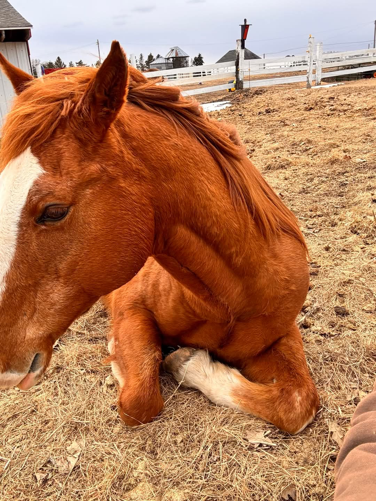
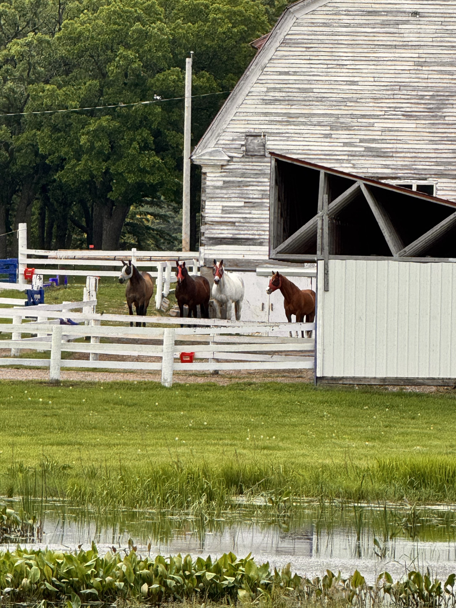

Equine-Facilitated Psychotherapy Training (EFPT)
EFPT is a therapeutic approach that involves working directly with horses to help individuals reconnect with themselves and others. Our programs provide a safe and nurturing environment where veterans and first responders can heal, grow, and regain hope.

Experience emotional healing through guided horse interactions, where the quiet presence of a horse helps veterans rediscover calm, confidence, and connection.
Key Benefits of EFPT
- Boundary Setting: Develops awareness and respect for personal boundaries through direct interaction with horses, who respond to clear, consistent cues.
- Self-Esteem: Builds confidence and self-worth as participants achieve milestones and experience growth through their work with the horse.
- Confidence Building: Strengthens self-assurance by mastering horsemanship skills and overcoming challenges in a supportive environment.
- Friendship and Community: Fosters connections with others who share similar experiences, creating a sense of camaraderie and mutual support.
- Bonding with Horses: Establishes a trusting, empathetic bond with horses, which can be therapeutic and help individuals understand non-verbal communication.
- Horsemanship Skills: Develops practical skills in caring for and working with horses, fostering a sense of accomplishment and responsibility.
Horsemanship & Skill Building

Participants learn practical horsemanship — grooming, leading, and understanding equine behavior — which enhances emotional regulation, confidence, and responsibility. These skills empower veterans and first responders to approach life’s challenges with resilience.
Community & Peer Connection
Our group-based sessions foster camaraderie among participants who’ve shared similar life experiences. The shared time with horses and each other helps build trust, reduce isolation, and promote healing.

Join a circle of healing where the bond between peers and horses creates space for connection, understanding, and peace beyond words.
Why Horses?
Horses are incredibly responsive to human emotion. Their ability to mirror our non-verbal cues creates opportunities for self-discovery and therapeutic growth. They offer honest, immediate feedback and provide a unique path to healing and self-understanding.